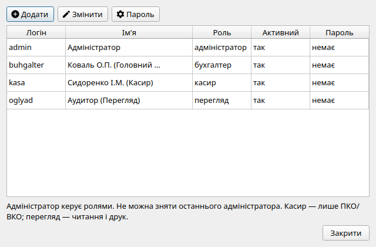
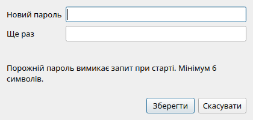
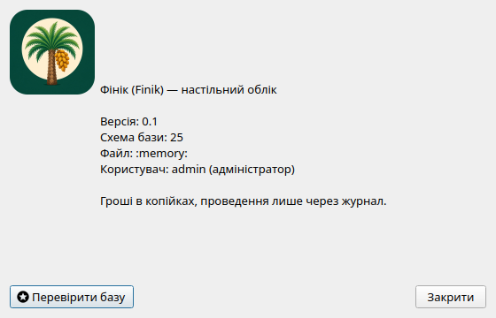

Ролі розмежовують права в одній локальній базі на рівні бізнес-логіки, а не лише приховуванням кнопок. Це не клієнт–сервер: не відкривайте той самий файл з двох комп'ютерів одночасно. Кілька облікових записів (бухгалтер і касир) працюють по черзі на одному ПК.

Діалог керування користувачами та ролями доступу (доступний Адміністратору).Кожному користувачеві призначається одна з чотирьох системних ролей:
| Роль | Дозволені операції | Обмеження та заборони |
|---|---|---|
| Адміністратор (Admin) | Повний доступ до всіх функцій: керування обліковими записами користувачів, зміна ролей, скидання паролів, завантаження демо-даних, відновлення бази з бекапу, перегляд журналу аудиту. | Система блокує спроби видалити, деактивувати або понизити роль останнього активного адміністратора в базі. |
| Бухгалтер (Accountant) | Ведення всього щоденного обліку: створення та проведення всіх типів документів, нарахування заробітної плати, виписка податкових накладних, облік ОЗ/НМА/МШП, закриття звітного періоду, редагування реквізитів підприємства, створення бекапів, прив’язка субконто в плані рахунків. | Не може створювати нових користувачів та виконувати процедуру відновлення бази. |
| Касир (Cashier) | Оформлення виключно касових операцій: Прибутковий касовий ордер (ПКО, КО-1) та Видатковий касовий ордер (ВКО, КО-2), формування Касової книги (КО-4) по рахунку 301. | Касир не має доступу до товарних накладних, банківських платежів, нарахування зарплати, податкових накладних, закриття періоду, зміни реквізитів компанії чи прив’язки субконто до рахунків. |
| Спостерігач (Viewer) | Режим аудиту та перегляду: відкриття журналів, перегляд ОСВ, балансу, звітів, формування друкованих форм та збереження у PDF. | Повна заборона на будь-які операції вставки, редагування, видалення, проведення чи зняття проведення документів, а також на зміну довідників і субконто рахунків. |
За замовчуванням у новій базі даних створено єдиного користувача
admin (роль Адміністратор) з порожнім паролем. Це дозволяє
одразу почати налаштування без введення логіна.
Щоб увімкнути захист програми від несанкціонованого доступу:
Для криптографічного захисту паролів застосовується сучасне хешування з індивідуальною сіллю на кожного користувача. Паролі ніколи не зберігаються у відкритому вигляді.
Токени інтеграцій (Monobank, Checkbox) у картці підприємства зберігаються
у зашифрованому вигляді з фіксованим внутрішнім ключем програми. Це захист
від випадкового перегляду файлу бази «на око», а не від власника файлу
*.fin: хто має файл і програму — може розшифрувати секрети.
Не передавайте демо-базу з реальними токенами.

Зміна пароля користувача з підтвердженням складності.У меню Облік → Журнал дій ведеться незмінний журнал аудиту. Кожна значуща операція автоматично фіксує:

Інформаційне вікно: версія, шлях до бази, Copyright (C) 2026 Ihor Dolinskyi, атрибуція Qt і GNU GPL v3. Окремо — пункт меню «Про Qt…».